UJI 跨项目结果汇总 · 2026-09-30
仅汇总现有结果，无新增训练。表格、图表与解释文字分别保存；未制作PPT文件。
单独的解释文字 · 全部25项分支登记 · 数据来源
表格
TPM 主线：少量标注能换来多少精度？
可复制表格 · TSV · SVG
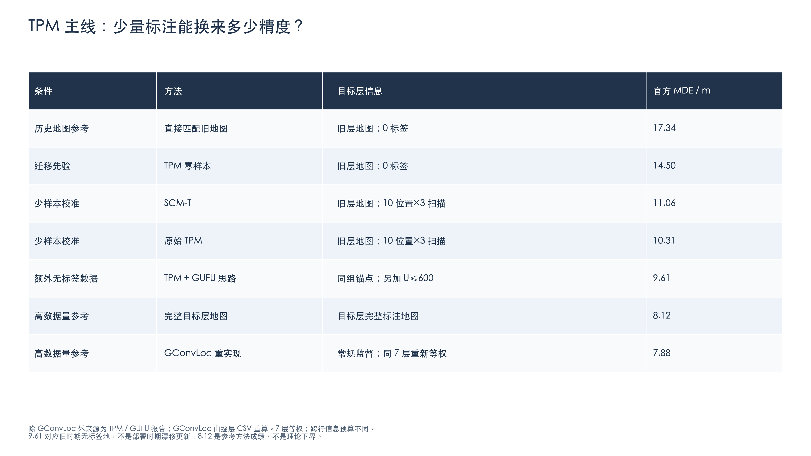
新增模块：只看各自协议内的成对变化
可复制表格 · TSV · SVG
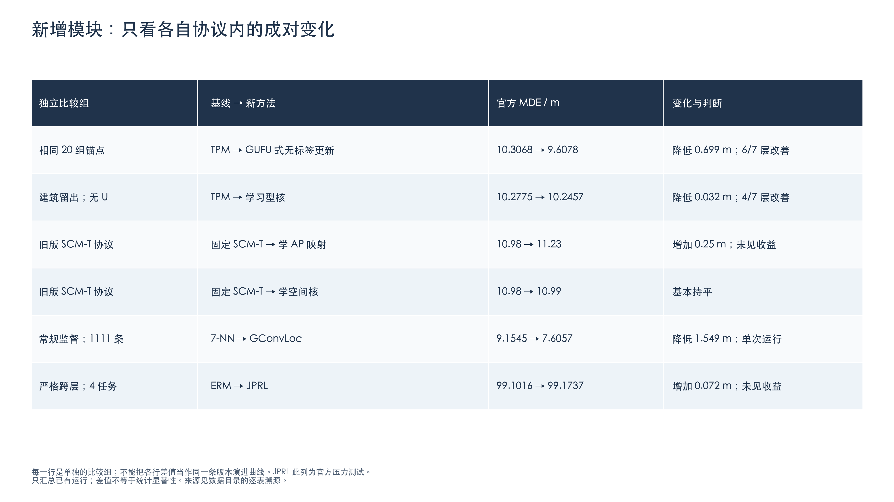
历史方法：三个目标层的结果与实验条件
可复制表格 · TSV · SVG
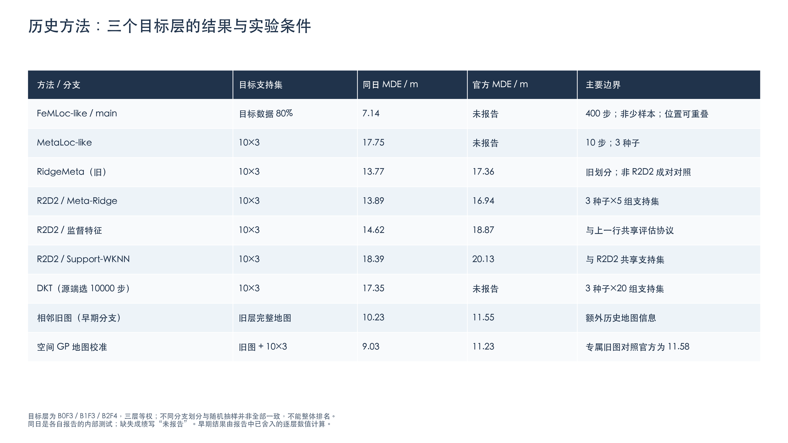
支持集训练变体：共享目标层与评估协议
可复制表格 · TSV · SVG
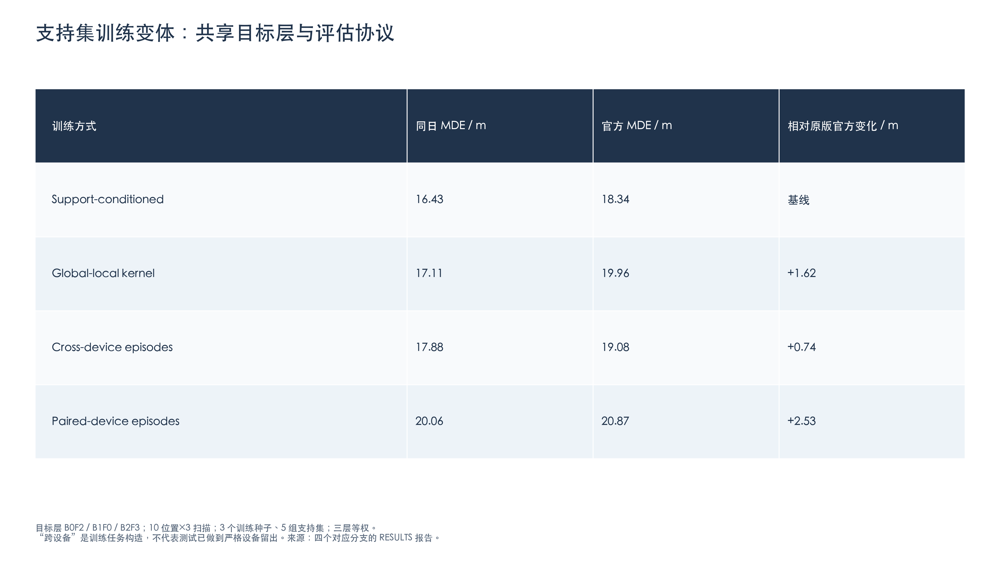
uji-explore：新旧分支都保留，包括负结果
可复制表格 · TSV · SVG
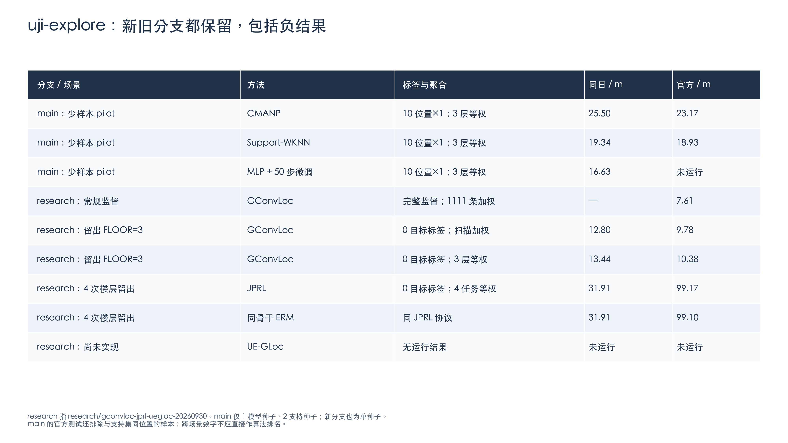
图表
TPM 的主要优势出现在标注更少时
PNG · SVG · PDF
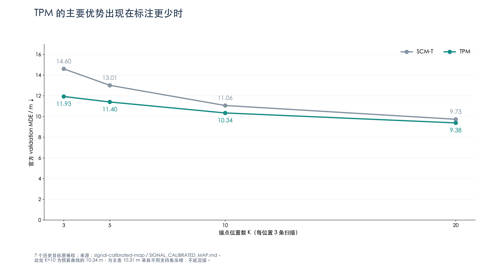
额外无标签扫描带来 0.70 m 改善，但并非每层都受益
PNG · SVG · PDF
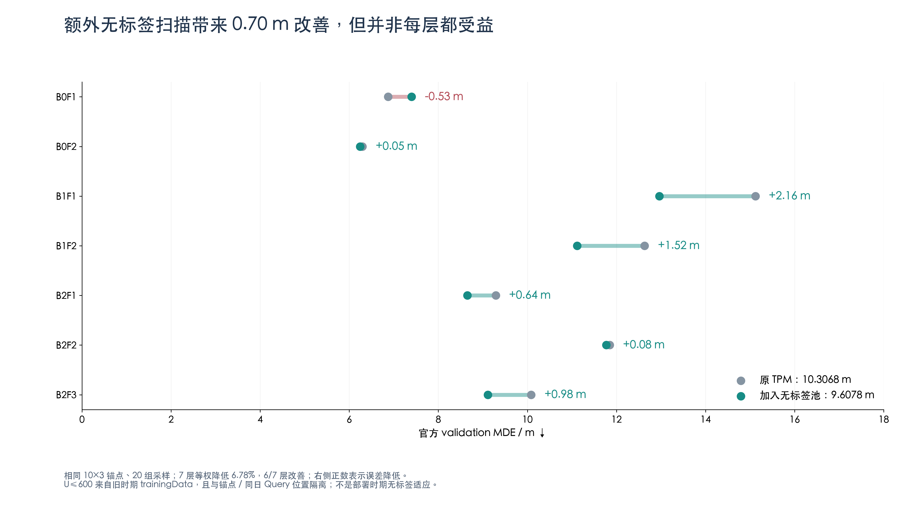
现有学习模块的增益很小：尚未证明值得替换固定先验
PNG · SVG · PDF
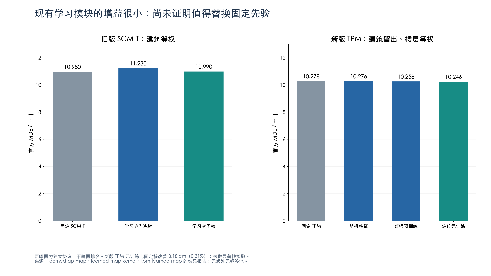
R2D2：元训练特征在自己的少样本协议中有明确数值收益
PNG · SVG · PDF
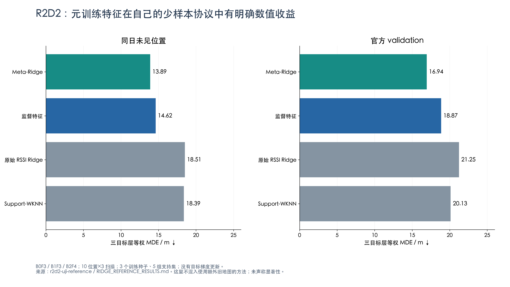
GConvLoc 常规监督：平均误差更小，尾部误差也降低
PNG · SVG · PDF
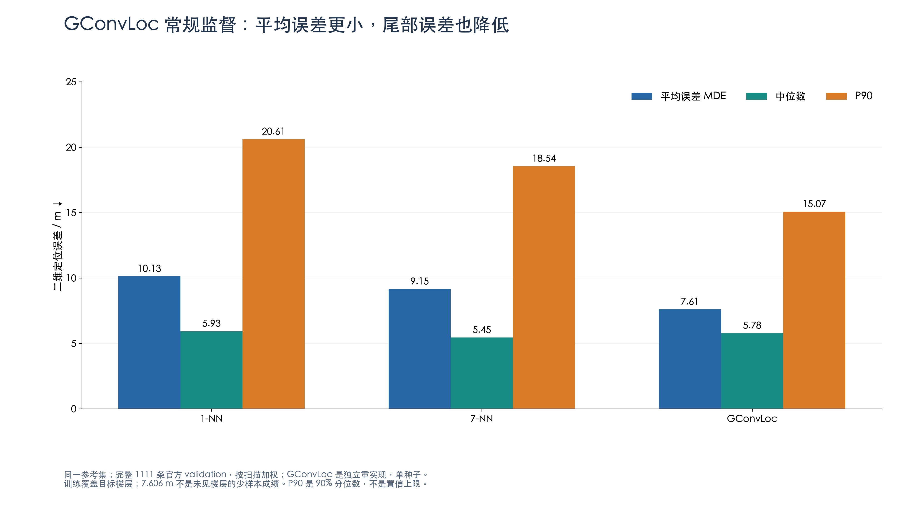
完全留出 FLOOR=3：GConvLoc 优于同参考集的近邻基线
PNG · SVG · PDF
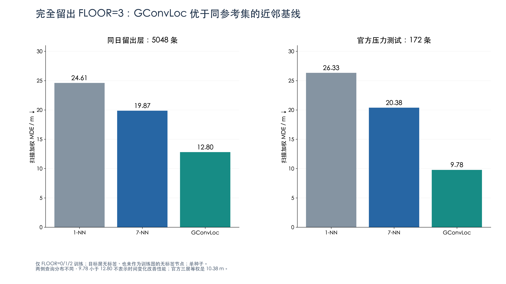
JPRL 重实现：没有显示出相对同骨干 ERM 的收益
PNG · SVG · PDF
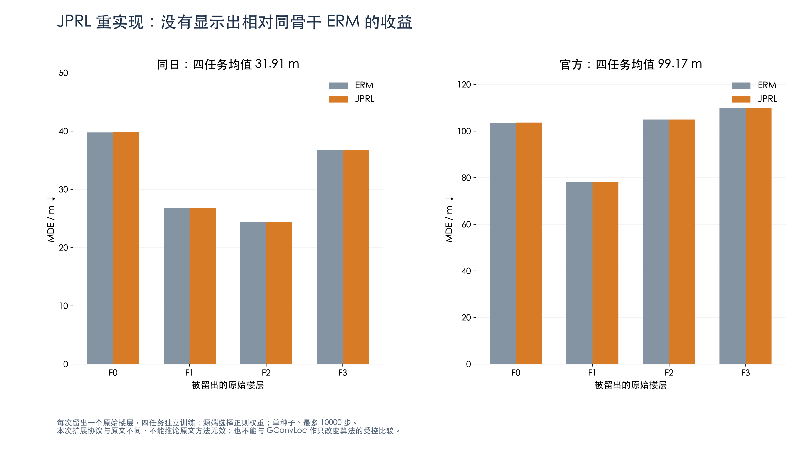
旧分支 CMANP pilot：增加支持样本尚未带来适应收益
PNG · SVG · PDF
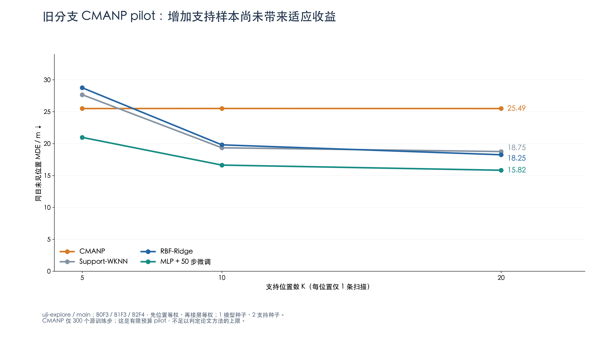